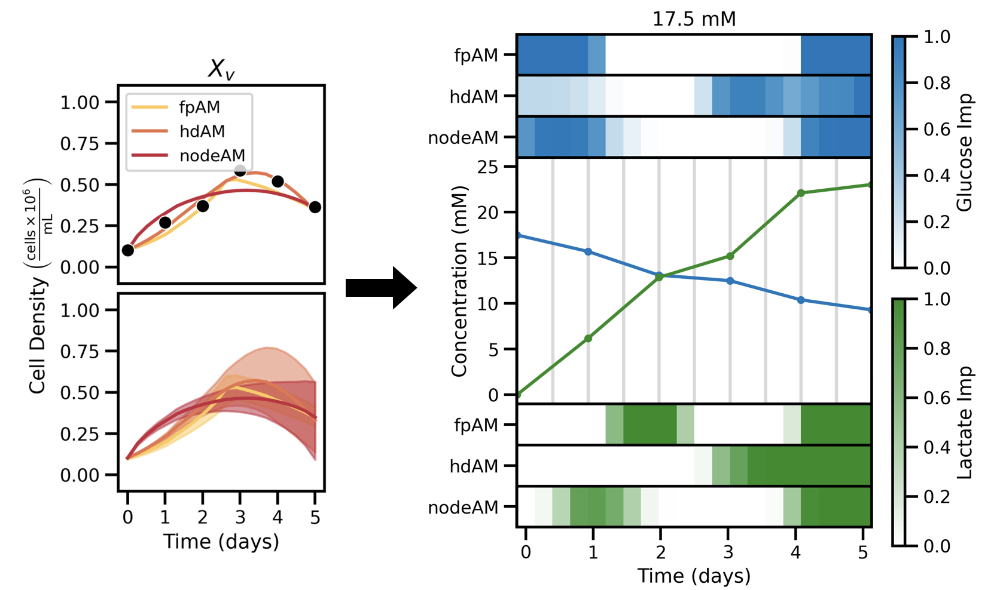

Physics Informed Architecture Design for Modeling Stem Cell Growth
Skriloff, O., D. M. Stoukides, and E. S. Tzanakakis. (2025). Augmentation Models of Stem Cell Culture Data for the Application of Machine Learning. Biotechnology and Bioengineering, 0, 1–11. https://doi.org/10.1002/bit.70094

This project introduces a novel technique for evaluating how physics-informed machine learning architectures align with expected biological behavior. By repeatedly sampling trained models through data augmentation and incorporating a meta-learning stage, the approach reveals how different architectures treat key variables across dynamic systems. We demonstrate the method using stem cell growth, identifying which models best capture the impact of glucose and lactate dynamics on pluripotency and viable cell count. This framework offers a generalizable strategy for model selection in any coupled dynamical system, including applications in metabolic engineering, tissue modeling, and predictive biomanufacturing.